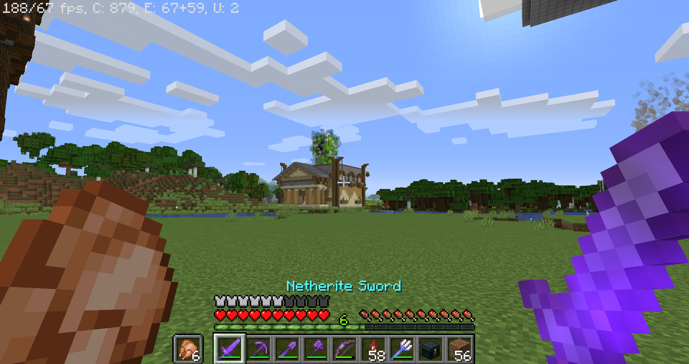
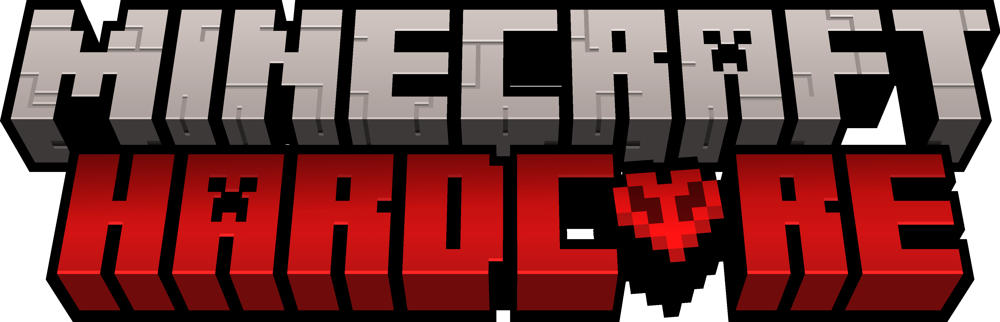
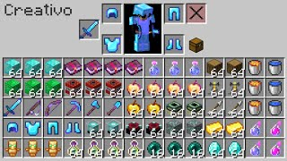
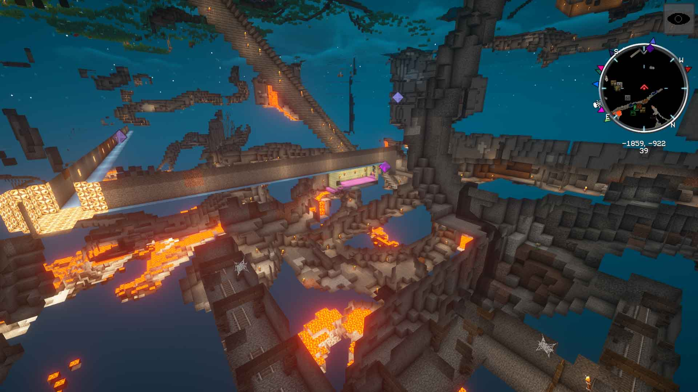

SUPERVIVENCIA
Esta es la modalidad en la que puedes elegir entre llevar una vida lo más apacible en la superficie, explorar el mapa en busca de las maravillas que guarda para ti, picar hasta llegar a las profundidades de la Tierra, indagar entre las posibilidades de automatización que proporciona la redstone, lanzarte al nether en busca de bastiones y netherita o, lo más osados, intentar llegar hasta el End para enfrentarte al dragón. O, como hacemos muchos, una mezcla de todo esto, con mapas cuya vida y jugabilidad se pueden mantener durante años. De los modos de Minecraft es, sin duda, el más completo.
Estos son los distintos niveles de dificultad de Minecraft Survival:
Pacífico: Su propio nombre lo indica, no tendrás que preocuparte por las criaturas malvadas en el overworld (el mapa principal), no tendrás que preocuparte por la comida y tu salud se recuperará automáticamente sin que tengas que hacer nada.
Fácil: Una buena primera toma de contacto con las fuerzas del mal de Minecraft. Ya hay criaturas malvadas en el overworld pero infligen menos daño que en los niveles siguientes, además de estar menos equipadas.
Normal: El más común de los niveles, aquí las criaturas ya hacen más daño, y el hambre puede llegar a dejar al jugador con el mínimo de vida.
Difícil: Las criaturas provocan mucho más daño, los zombies son capaces de abrir puertas de madera (adiós a la protección de tu hogar), las criaturas suelen tener armaduras y efectos que dificultan enfrentarse a ellos y los saqueadores se generan cerca de tu ubicación.
HARDCORE
Como su propio nombre indica, el más extremo y, por lo tanto, el más difícil. Lo puedes escoger, si atreves, en el selector inicial de los modos de Minecraft al crear un mapa nuevo. En su base, es similar al modo survival en nivel de dificultad difícil, con los extras de que no podrás activar los trucos, no podrás ajustar la dificultad posteriormente y lo más importante, solo cuentas con una vida. Si mueres acabará la partida y, si es una partida multijugador, ya solo podrás disfrutarla en el modo espectador.
CREATIVO
Aquí los límites los marca tu imaginación, ya que no tendrás que preocuparte ni por criaturas, ni por recursos ni por comida… aquí el desafío es, como su propio nombre indica, creativo, pues tendrás acceso ilimitado a todos los materiales, podrás destruir todo tipo de bloques (incluida la roca base) con un simple toque y sin necesidad de pico y, por si todo esto te parece poco, podrás volar.
ESPECTADOR
Es una vista del subsuelo en la que los bloques de roca son transparentes, y que te permite ver fácilmente (cuando te acostumbras a esta vista) la estructura del subsuelo. Y no solo eso, en este modo te puedes mover libremente por todo el mapa, cruzando bloques como si no existieran. Cuando estás en modo espectador, no activas los chunks de tu entorno y, por lo tanto, cualquier elemento que dependa de la presencia del jugador para activarse, permanecerá inactivo.
Tampoco podrás interactuar con bloques, criaturas, dispositivos, etcétera. Podrás ver el contenido de los cofres pero no interactuar con el mismo y no tendrás inventario. De los modos de Minecraft, éste es el único que no cuenta con una mecánica de juego, solo resulta útil para explorar el mapa.